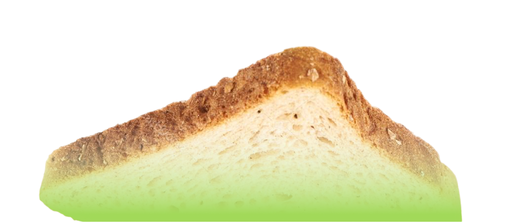
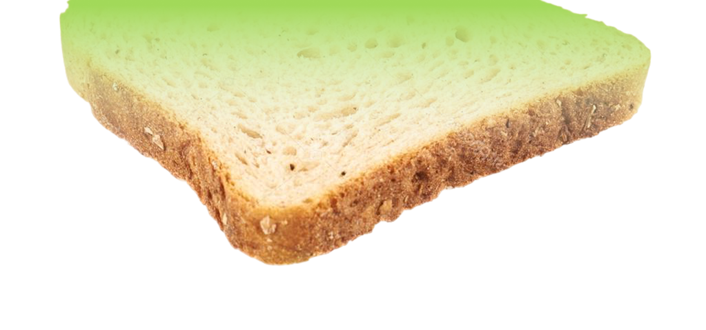
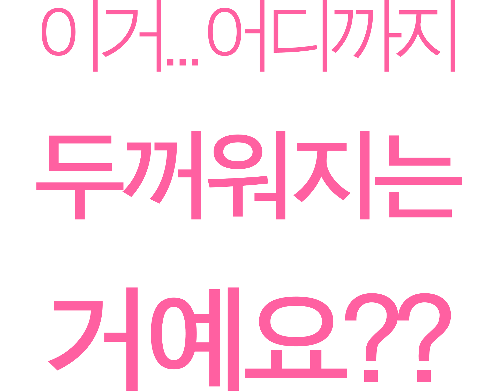
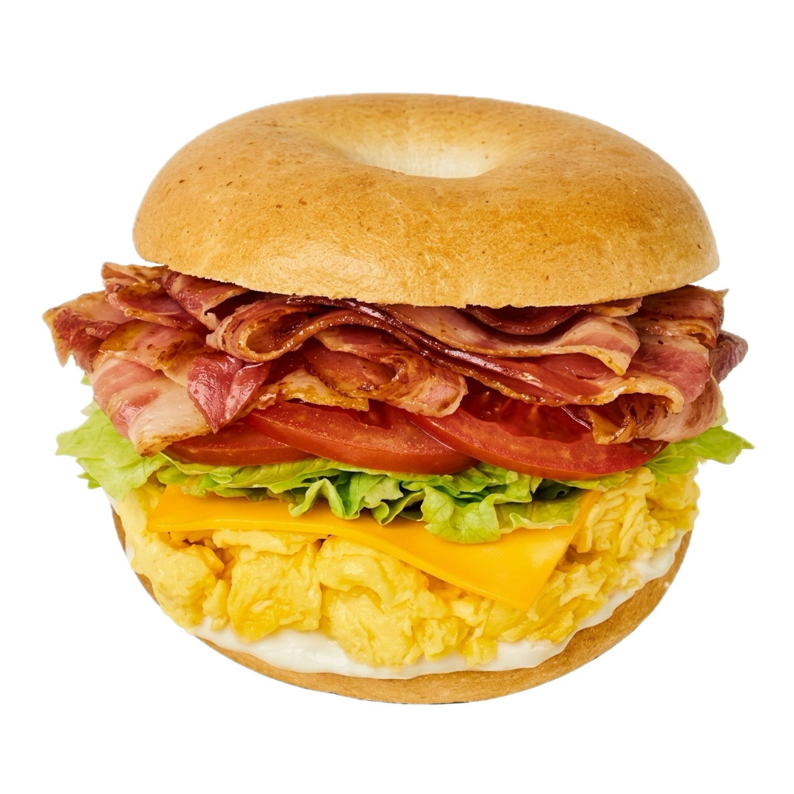
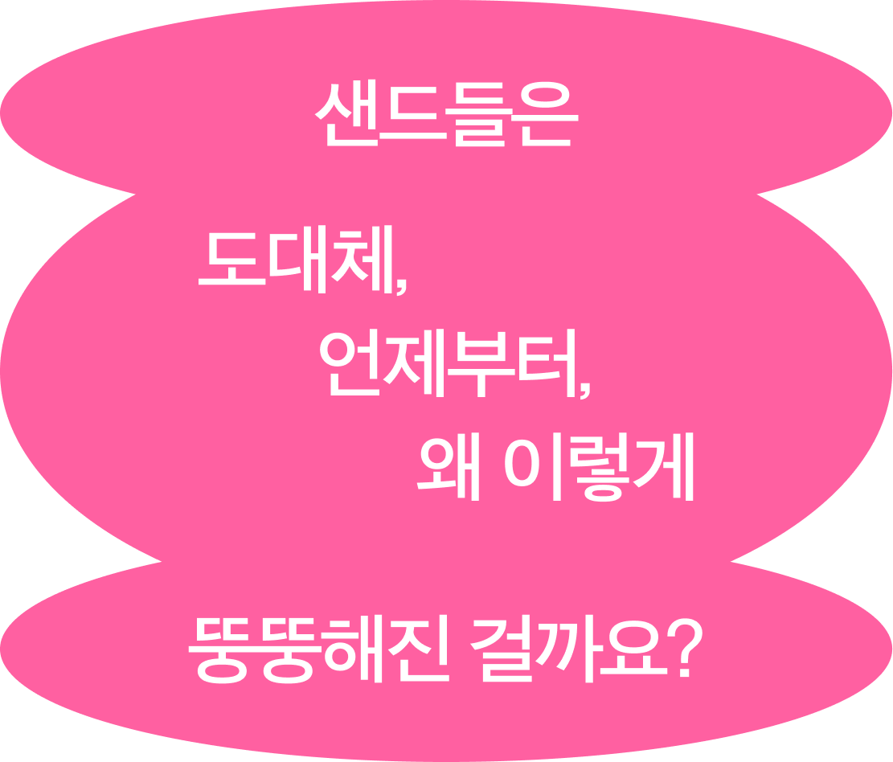

점점 뚱뚱해지는 샌드위치에 관한 이야기




이렇게 생긴 뚱뚱한 샌드위치는 우리에게 이미 익숙해졌죠.

"이건... 샌드가 아니라..."

"하마가 될 수 있는 새로운 도구!?"


지금과는 조금 달랐습니다.
18세기 영국에서 탄생한 샌드위치는
빠르게 식사를 해결하기 위한 음식이었어요.
한 손으로 들고,
한 입에 베어 물고,
흘리지 않고 먹는 것.
한 손으로 먹기 쉽다
이동하며 먹기 쉽다
내용물이 쏟아지지 않는다
빠르게 식사할 수 있다


하지만 이것은 시작에 불과했습니다.


일본에서 시작된 후르츠 산도는
그 변화를 가장 잘 보여줍니다.
먹기 위해 만든 음식이
보여주기 위한 음식으로도
변하기 시작한 것입니다.

재료도 점점 많아졌습니다.
크림은 더 두꺼워지고, 과일은 더 커지고, 단면은 더 화려해졌습니다.
샌드위치의 변화는
단순한 음식 트렌드가 아니고
시대의 취향이 반영되어 있다는내용
어느 시대가 궁금하다면 빵과 빵 사이를 살펴보자.